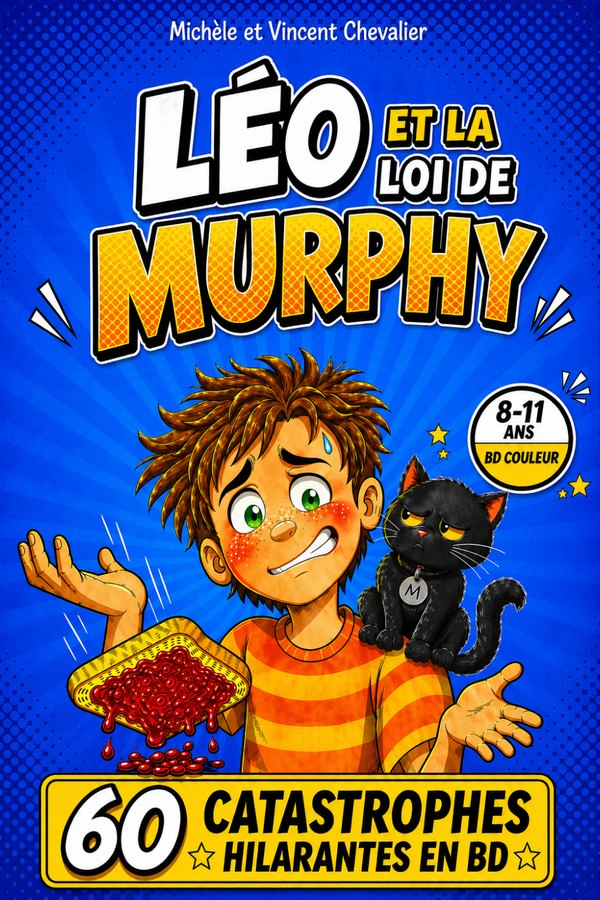
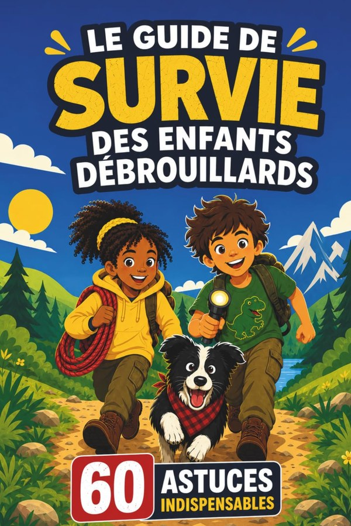
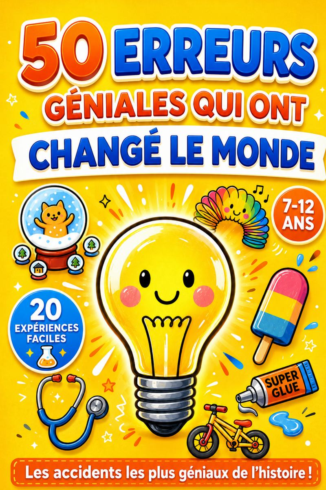
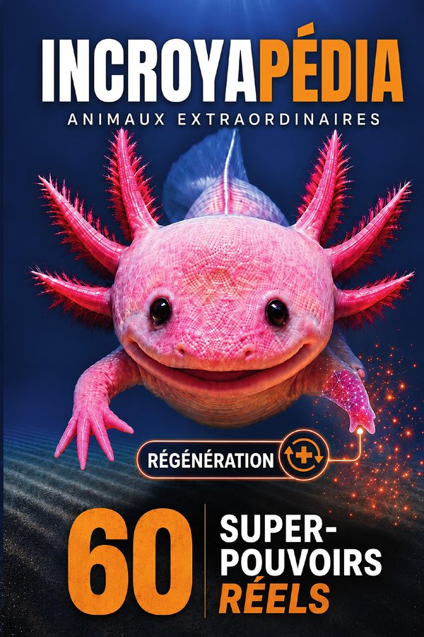

Voyageur du temps
Grâce à une montre magique, Gaspard traverse les âges : préhistoire, Égypte antique, Japon féodal. Pour les 6-11 ans.
★★★★☆4,5 · 288 avis14,99 €
À 9 ans, la plupart des enfants lisent seuls. Ce qui fait la différence : un sujet qui accroche, un héros auquel on s’identifie, et l’envie de connaître la suite.
Gaspard a 10 ans : il doute, se trompe, recommence. Les lecteurs de CM1 et de CM2 s’y reconnaissent.
Un roman qui se passe à une vraie époque fait découvrir l’histoire mieux qu’une leçon.
BD, documentaire, roman : à cet âge, l’enfant affirme ses goûts. Proposez plusieurs genres et laissez-le décider.
Les sujets graves, comme l’injustice ou l’esclavage, se lisent mieux quand on peut en parler en famille.
Les tomes 1 à 3 de Gaspard, 10 ans : la préhistoire et l’Égypte, les Sioux, les îles Marquises. Pour les fans d’animaux : Incroyapédia et C’est qui le plus fort ?.
Les deux derniers Gaspard : Les Graines de la Liberté, le tome le plus grave de la série, et Le Secret de la Montre Magique, qui révèle d’où vient la montre. Pour les débrouillards : Le Guide de survie des enfants débrouillards.
Des lectures rapides et drôles : Léo et la loi de Murphy, soixante planches de BD, et 50 Erreurs Géniales qui ont changé le monde. Le tome 5 de Gaspard est écrit jusqu’à 12 ans.
Tous imprimés en couleurs, au format broché, et vendus sur Amazon.fr. L’âge indiqué est celui pour lequel le texte a été écrit.
Grâce à une montre magique, Gaspard traverse les âges : préhistoire, Égypte antique, Japon féodal. Pour les 6-11 ans.

Vivre comme un jeune Sioux et partir sur la trace du Bison Blanc pour sauver la tribu.

Cap sur les îles Marquises, bien avant les premiers explorateurs, avec Tahia, la fille du chef.

Dans une plantation du Brésil colonial, Gaspard se lie avec Joachim, fils d’esclave. Une aventure sur la liberté.

Gaspard remonte les siècles et rencontre ses ancêtres. Le mystère de la montre, enfin.

Soixante catastrophes hilarantes en BD couleur. Un livre drôle qui apprend à relativiser.

Soixante astuces vraies pour se débrouiller dans la nature, avec Mila, Tom et Boussole le chien.

Le roquefort, le stéthoscope, la pénicilline : cinquante découvertes nées d’une erreur. Pour les 7-11 ans.

Soixante animaux, soixante super-pouvoirs, et tout est vrai. Pour les 7-11 ans.
Ours polaire ou grizzly ? Orque ou grand requin blanc ? L’enfant parie, tourne la page et découvre la vraie réponse.
Une BD d’humour comme Léo et la loi de Murphy, ou un roman court et illustré comme le premier Gaspard, Voyageur du temps, écrit pour les lecteurs qui n’aiment « pas trop » lire.
Oui : il est écrit pour les lecteurs à partir de 8 ans. C’est le tome le plus grave de la série. Il aborde l’esclavage avec justesse et sans images choquantes, et donne matière à parler en famille.
Un héros de son âge : Gaspard, 10 ans. Commencez par le tome 1, Voyageur du temps, puis laissez-le choisir son époque. Les cinq tomes dans l’ordre
Oui : nous offrons un livre par famille, en entier, à lire en ligne ou à télécharger en PDF. Choisir mon livre offert
Choisissez un livre : il s’ouvre aussitôt, à lire en ligne ou à télécharger en PDF. Un livre par famille.
Responsable : Famille Chevalier.
Données collectées : adresse email et livre choisi, uniquement via le formulaire du livre offert et l’inscription aux nouvelles parutions ; dans l’espace parents du jeu « L’Arène des Duels », l’adresse email du parent qui demande le champion secret.
Finalité : remise du livre choisi (lecture en ligne ou téléchargement) et, une semaine plus tard, un seul message pour vérifier qu’il vous est bien parvenu ; pour le jeu, l’envoi du code demandé ; avec votre consentement, l’annonce de nos nouvelles parutions et de nos grands rendez-vous (lancement d’un livre, opérations de Noël), quelques envois par an.
Base légale : votre consentement explicite (case à cocher).
Conservation : tant que vous êtes inscrit(e) ; suppression sur simple demande.
Partage : vos données ne sont ni vendues ni transmises à des tiers. Seuls nos prestataires techniques les traitent, pour notre compte : Google (formulaire et fichier des inscrits) et Brevo, société française qui envoie nos emails.
Mesure d’audience : les liens de nos emails (livre offert, message de vérification, annonces) sont propres à chaque destinataire. Ils nous indiquent si vous avez ouvert le livre, visité une page ou cliqué vers Amazon. Brevo ajoute à chaque email une image invisible et fait passer les liens par ses serveurs : il compte ainsi les ouvertures et les clics de façon globale, sans les relier à votre adresse. Quand vous arrivez par l’un de nos liens, votre identifiant est gardé dans votre navigateur le temps de la visite. Sur le site, nous comptons aussi les pages vues (la page et la provenance : type de site, ou nom du site d’origine s’il n’entre dans aucun type, jamais l’adresse exacte de la page) et les clics vers Amazon, sans cookie, et sans vous identifier si vous ne venez pas d’un de nos emails. Ces informations servent uniquement à mesurer l’intérêt pour nos livres et à écarter les abus ; elles ne sont jamais transmises à des tiers. Pour vous opposer à ce suivi, écrivez-nous.
Jeu « L’Arène des Duels » : le jeu ne demande rien à l’enfant (ni compte, ni prénom) et garde sa progression sur l’appareil. Pour savoir s’il plaît, il compte les ouvertures, les parties et les animaux gagnés, par type d’appareil (téléphone, tablette, ordinateur), sans cookie ni identifiant : rien ne permet de reconnaître un enfant ou un appareil. Ces compteurs, envoyés à notre script Google, sont additionnés chaque jour et servent uniquement à mesurer l’intérêt pour le jeu. L’espace parents du jeu permet de couper ce comptage (« Compter cet appareil : NON »). Le mode « chacun son téléphone » passe par un service de mise en relation (PeerJS) le temps d’une partie ; rien n’est conservé.
Vos droits : accès, rectification, suppression, opposition — en écrivant à contact@editions-chevalier.fr. Demande traitée sous 48 heures.
Éditeur du site : Famille Chevalier, activité d’édition indépendante.
Directrice éditoriale : Michèle Chevalier.
Contact : contact@editions-chevalier.fr
Hébergeur : GitHub, Inc. — 88 Colin P Kelly Jr St, San Francisco, CA 94107, États-Unis.
Propriété intellectuelle : l’ensemble du contenu de ce site (textes, illustrations, couvertures) est protégé par le droit d’auteur. Toute reproduction est interdite sans autorisation écrite.
Cookies : ce site n’utilise aucun cookie de traçage ni outil d’analyse tiers.
Droit applicable : droit français.